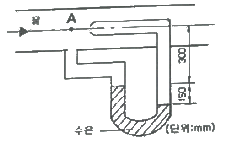
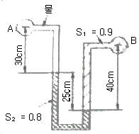
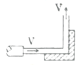
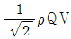
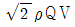
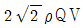

소방설비산업기사(기계) (2014-09-20 기출문제)
1과목: 소방원론
1. 연소의 3요소에 해당하지 않는 것은?
- 점화원
- 가연물
- 산소
- 촉매
(정답률: 93%)

2. 소화(逍火)를 하기 위한 방법으로 틀린 것은?
- 산소의 농도를 낮추어 준다.
- 가연성 물질을 냉각시킨다.
- 가열원을 계속 공급한다.
- 연쇄반응을 억제한다.
(정답률: 93%)
3. 질소가 가연물이 될 수 없는 이유를 가장 옳게 설명한 것은?
- 산화반응시 흡열반응을 하기 때문에
- 연소시 화염이 없기 때문에
- 산소와 반응하지 않기 때문에
- 산화반응시 발열반응을 하기 때문에
(정답률: 79%)
4. 위험물안전관리법령상 제1류 위험물의 성질을 옳게 나타낸 것은?
- 가연성 고체
- 산화성 고체
- 인화성 액체
- 자연발화성 물질
(정답률: 85%)
5. 화재종류 중 A급 화재에 속하지 않는 것은?
- 목재화재
- 섬유화재
- 종이화재
- 금속화재
(정답률: 86%)
6. 등유 또는 경유 화재에 해당하는 것은?
- A급 화재
- B급 화재
- C급 화재
- D급 화재
(정답률: 93%)
7. 내화구조의 기준에서 바닥의 경우 철근 콘크리트조로서 몇 cm 이상인 것이 내화구조에 해당하는가?
- 3
- 5
- 10
- 15
(정답률: 76%)
8. 적린의 착화온도는 약 몇 ℃ 인가?
- 34
- 157
- 180
- 260
(정답률: 83%)
9. 이황화탄소 연소 시 발생하는 유독성의 가스는?
- 황화수소
- 이산화질소
- 아세트산가스
- 아황산가스
(정답률: 75%)
10. 유류화재시 주수소화하게 되면 소화약제인 물이 갑작스럽게 증기화되면서 화재면을 확대시키는 현상은?
- boil over
- flash over
- slop over
- froth over
(정답률: 62%)
11. 일반적인 열의 전달 형태가 아닌 것은?
- 전도
- 분해
- 대류
- 복사
(정답률: 84%)
12. 다음 중 물의 소화효과로 가장 거리가 먼 것은?
- 냉각효과
- 질식효과
- 유화효과
- 부촉매효과
(정답률: 86%)
13. 질산에 대한 설명으로 틀린 것은?(오류 신고가 접수된 문제입니다. 반드시 정답과 해설을 확인하시기 바랍니다.)
- 부식성이 있다.
- 불연성 물질이다.
- 산화제이다.
- 산화되기 쉬운 물질이다.
(정답률: 71%)
14. 목탄의 주된 연소형태에 해당하는 것은?
- 자기연소
- 표면연소
- 증발연소
- 확산연소
(정답률: 91%)
15. 다음 물질의 연소 중 자기연소에 해당하는 것은?
- 목탄
- 종이
- 유황
- TNT
(정답률: 81%)
16. 불연성 기체나 고체 등으로 연소물을 감싸서 산소 공급을 차단하는 소화의 원리는?
- 냉각소화
- 제거소화
- 희석소화
- 질식소화
(정답률: 85%)
17. 화재시 발생할 수 있는 유해한 가스로 혈액 중의 산소운반 물질인 헤모글로빈과 결합하여 헤모글로빈에 의한 산소운반을 방해하는 작용을 하는 것은?
- CO
- CO2
- H2
- H2O
(정답률: 85%)
18. 프로판가스의 특성에 대한 설명으로 옳은 것은?
- 누출된 프로판가스는 공기보다 가벼워 천장에 모인다.
- 가스비중은 약 0.5이다.
- 연소범위는 약 2.1~9.5 Vol% 이다.
- 프로판가스는 LNG의 주성분이다.
(정답률: 74%)
19. 270℃에서 제1종 분말 소화약제의 열분해 반응식은?
- 2NaHCO3+열 → Na2CO3+CO2+H2O
- 2NaHCO3+열 → 2NaCO3+H2
- 2KHCO3+열 → K2CO3+CO2+H2O
- 2KHCO3+열 → K2C+2CO2+H2O
(정답률: 85%)
20. 백 드래프트(back draft)에 관한 설명으로 가장 거리가 먼 것은?
- 공기가 지속적으로 원활하게 공급되는 경우에는 발생 가능성이 낮다.
- 내화조건물의 화재 초기에 주로 발생한다.
- 새로운 공기가 공급되면 화염이 숨 쉬듯이 분출되는 현상이다.
- 화재진압 과정에서 갑작스러원 폭발의 위험이 있다.
(정답률: 71%)
2과목: 소방유체역학
21. 수평면과 45° 경사를 갖는 지름 250mm인 원관의 위쪽 출구 방향으로 유출하는 물 제트의 유출속도가 9.8m/s2라고 한다면 출구로부터의 물 제트의 최고 수직상승 높이는 약 몇 m인가? (단, 공기의 저항은 무시한다.)(오류 신고가 접수된 문제입니다. 반드시 정답과 해설을 확인하시기 바랍니다.)
- 2.45
- 3
- 3.45
- 4.45
(정답률: 38%)
22. 그림과 같이 관에 시차압력계를 설치하였을 때 점 A에서의 유속은 약 몇 m/s인가? (단, 시차압력계 내부의 유체는 비중 13.6인 수은이고, 관 속을 흐르는 유체는 물이다.)

- 4.28
- 6.09
- 7.03
- 10.5
(정답률: 50%)
23. 분자량이 4이고 비열비가 1.67인 이상기체의 정압비열은 몇 kJ/kmol·K인가? (단, 이상기체의 일반기체상수는 8.314kJ/kmol·K이다.)
- 3.10
- 4.72
- 5.18
- 6.75
(정답률: 56%)
24. 대기압 101kPa인 곳에서 측정된 진공압력이 7kPa일 때, 절대압력은 몇 kPa인가?
- -7
- 7
- 94
- 108
(정답률: 63%)
25. 유체의 일반적인 성질로 보기 어려운 것은?
- 변형이 쉽고 정해진 형체가 없다.
- 전단응력을 받으면 연속적으로 변형한다.
- 정지하였을 때의 전단응력이 운동할 때보다 크다.
- 일반적으로 압력을 올리면 밀도가 커진다.
(정답률: 71%)
26. 너비 2m, 높이 4m인 직사각형 수문이 수직으로 놓여있다. 수문 위 끝이 수면 아래 2m 지점에 있다면 이 수문에 가해지는 압력중심은 수면으로부터 약 몇 m 지점인가? (단, 대기압은 무시한다.)
- 3.67
- 3.97
- 4.33
- 5.55
(정답률: 40%)
27. 성능이 같은 2대의 펌프를 직렬로 설치했을 경우, 손실을 무시하면 전 토출량은 어떻게 되는가? (단. 1대의 펌프 유량을 Q라 한다.)
- 0.5Q
- 1Q
- 1.5Q
- 2Q
(정답률: 58%)
28. 캐비테이션 방지법에 관한 설명으로 옳지 않은 것은?
- 회전차를 수중에 완전히 잠기게 한다.
- 양흡입 펌프보다는 단흡입 펌프를 사용한다.
- 펌프의 회전수를 낮추어 흡입비속도를 작게 한다.
- 펌프의 설치높이를 가능한 낮추어 유효흡입수두를 크게 한다.
(정답률: 66%)
29. 유속이 2m/s 유로에 설치된 부차적 손실계수(K)가 6인 밸브에서의 수두손실은 약 얼마인가?
- 0.523m
- 0.876m
- 1.024m
- 1.224m
(정답률: 51%)
30. 펌프의 축동력에 대한 설명으로 옳은 것은?
- 수동력을 펌프효율로 나눈 값
- 유체에 가한 에너지에서 수력손실을 뺀 값
- 펌프로부터 유체가 얻어가지고 나가는 동력
- 구동축에 가한 동력 중 유체에 실제로 전달된 동력
(정답률: 66%)
31. 피스톤-실린더로 구성된 용기 안에 들어있는 실린더 내의 가스의 초기압력은 200kPa 이고, 체적은 0.1m3이었다. 실린더 밑면을 가열하여 체적이 0.3m3로 변했을 때의 계의 의하여 한 일은 얼마인가? (단, 가열과정은 일정한 압력 하에서 진행되었다.)
- 40W
- 40kW
- 40J
- 40kJ
(정답률: 49%)
32. 온도 20℃, 압력 400kPa, 기체 15m3을 등온 압축하여 체적이 2m3로 되었다면 압축후의 압력은 몇 kPa 인가?
- 2000
- 2500
- 3000
- 4000
(정답률: 59%)
33. 수평원과 유동에 관한 설명으로 옳지 않은 것은?
- 층류 흐름에서 관 마찰계수는 레이놀즈수의 함수이다.
- 층류 흐름에서 수평원관 속의 유량은 직경에 반비례한다.
- 층류 유동상태인 직선원형관의 중심에서 전단응력은 0이다.
- 층류 유동에서 레이놀즈수가 2000일 때 관마찰계수는 0.032이다.
(정답률: 48%)
34. 관 A에는 물, B에는 비중(S1) 0.9인 유체가 차 있고, 액주계 액체의 비중(S2)은 0.8이다. A에서의 압력이 PA, B에서의 압력을 PB라고 할 때 (PA-PB)는 약 몇 kPa인가?

- -1.47
- -1.37
- 1.37
- 1.47
(정답률: 53%)
35. 그림과 같이 직각으로 구부러진 고정날개에 밀도 ρ인 물 분류가 충돌하여 수직 방향으로 분출되고 있다. 분류의 속도는 V, 유량은 Q일 때 고정날개가 받는 충격력의 크기는?



- 2ρQV

(정답률: 54%)
36. 단원자 이상기체인 아르곤(Ar)을 상온으로부터 3000K까지 온도를 높일 경우 정압비열의 변화를 바르게 설명한 것은?
- 온도가 높아져도 일정하다.
- 온도가 높아질수록 커진다.
- 온도가 높아질수록 작아진다.
- 온도가 높아지면서 커지다 작아진다.
(정답률: 57%)
37. 다음 중 열전도계수가 가장 높은 것은?
- 물
- 철
- 공기
- 구리
(정답률: 68%)
38. 동점성계수가 1.15×10-3m2/s인 물이 30mm 지름인 원고나 속을 흐르고 있다. 층류가 기대될 수 있는 최대의 유량은 몇 cm3/s 인가? (단, 상임계 레이놀즈수는 4000, 하임계 레이놀즈수는 2100이다.)(오류 신고가 접수된 문제입니다. 반드시 정답과 해설을 확인하시기 바랍니다.)
- 57
- 61
- 65
- 71
(정답률: 38%)
39. 물이 내경 10mm 오리피스에서 유속 40m/s로 방수되고 있을 때 방수량은 약 몇 m3/s인가?
- 0.0031
- 0.031
- 0.31
- 3.1
(정답률: 46%)
40. 기체를 가역 단열적으로 압축시킬 때 체적탄성계수는? (단, ρ는 밀도, k는 비열비, P는 절대압력이다.)
- P/ρ
- 1/P
- P
- kP
(정답률: 64%)
3과목: 소방관계법규
41. 소방방재청장이 실시하는 소방안전교육사 시험에 응시할 수 없는 사람은?
- 소방공무원으로 중앙·지방소방학교에서 소방안전교육시 관련 전문교육과정을 2주 이상 이수한 사람
- 기술대학 소방안전 관력 학과 외의 학과를 졸업한 자로서 소방안전관리론을 2학점 이상 이수하고 구급 및 응급처치론을 2학점 이상 이수한 사람
- 초·중교육법에 의한 정교사
- 고등교육법에 의한 전문학교를 졸업하고 소방설비산업기사 자격을 취득한 사람으로서 교육학을 3학점 이상 이수한 사람
(정답률: 47%)
42. 위험물제조소 등의 정기점검 대상의 기준이 아닌 것은?
- 지하탱크저장소
- 이동탱크저장소
- 지정수량의 10배 이상의 위험물을 취급하는 제조소
- 지정수량의 20배 이상의 위험물을 저장하는 옥외탱크저장소
(정답률: 71%)
43. 소방시설공사업자가 착공신고서에 첨부하여야 할 서류가 아닌 것은?
- 설계도서
- 건축허가서
- 기술관리를 하는 기술인력의 기술자격증 사본
- 소방시설공사업 등록증 사본 및 등록수첩
(정답률: 44%)
44. 인화성 액체 위험물 옥외탱크저장소의 탱크 주위에는 방유제를 설치하여야 한다. 방유제의 설치높이 기준으로 옳은 것은?
- 1.0m 이상 2.5m 이하
- 1.5m 이상 3.5m 이하
- 0.5m 이상 3.0m 이하
- 0.8m 이상 1.5m 이하
(정답률: 48%)
45. 소방방재청장, 소방본부장 또는 소방서장은 관할구역에 있는 소방대상물, 관계지역 또는 관계인에 대하여 소방시설 등이 소방관계 법령에 적합하게 설치·유지·관리되고 있는지 소방대상물에 화재·재난·재해 등의 발생 위험이 있는지 등을 확인하기 위하여 관계 공무원으로 하여금 소방안전관리에 관한 소방특별조사를 하게 할 수 있다. 소방특별조사의 항목이 아닌 것은?
- 소방안전관리 업무 소행에 관한 사항
- 화재의 예방조치 등에 관한 사항
- 불을 사용하는 설비 등의 관리와 특수가연물의 저장·취급에 관한 사항
- 소방대상물 및 관계지역에 대한 강제처분 피난명령에 관한 사항
(정답률: 53%)
46. 소방기계·기구에 대하여 우수품질인증을 할 수 있는 사람은?
- 한국소방안전협회장
- 소방본부장 또는 소방서장
- 시·도지사
- 소방방재청장
(정답률: 46%)
47. 자동화재탐지설비의 설치를 면제할 수 있는 기준으로 옳은 것은?
- 자동화재탐지설비의 기능과 성능을 가진 스프링클러설비를 화재안전기준에 적합하게 설치한 경우
- 자동화재탐지설비의 기능과 성능을 가진 제연설비를 화재안전기준에 적합하게 설치한 경우
- 자동화재탐지설비의 기능과 성능을 가진 연결송수관설비를 화재안전기준에 적합하게 설치한 경우
- 자동화재탐지설비의 기능과 성능을 가진 개방형헤드를 사용하는 소방설비를 화재안전기준에 적합하게 설치한 경우
(정답률: 69%)
48. 소방대상물이 있는 장소 및 인근지역으로서 화재의 예방·경계·진압·구조·구급 등의 소방 활동상 필요한 지역을 무엇이라 하는가?
- 관계지역
- 방화지역
- 화재지역
- 밀집지역
(정답률: 73%)
49. 방염처리업 등록신청서에 첨부하지 않아도 되는 것은?(관련 규정 개정전 문제로 여기서는 기존 정답인 4번을 누르면 정답 처리됩니다. 자세한 내용은 해설을 참고하세요.)
- 소방기술인력연명부
- 화공·섬유분야 학과의 졸업증명서
- 방염처리시설 및 시험기기 명세서
- 과세증명서 사본
(정답률: 73%)
50. 제4류 위험물을 저장·취급하는 제조소에 “화기엄금”이란 주의사항을 표시하는 게시판을 설치할 경우 게시판의 색상은?
- 청색바탕에 백색문자
- 적색바탕에 백색문자
- 백색바탕에 적색문자
- 백색바탕에 흑색문자
(정답률: 52%)
51. 건축허가 등의 동의요구시 동의요구서에 첨부하여야 할 서류가 아닌 것은?
- 건축허가 신청서 및 건축허가서
- 소방시설 설치계획표
- 소방시설설계업 등록증
- 소방시설공사업 등록증
(정답률: 65%)
52. 다음 중 유별을 달리하는 위험물을 혼재하여 저장할 수 있는 것으로 짝지어진 것은?
- 제1류-제2류
- 제2류-제3류
- 제3류-제4류
- 제5류-제6류
(정답률: 61%)
53. 스프링클러설비가 설치된 소방시설 등의 자체점검에서 종합정밀점검을 받아야 하는 아파트 대상 규모의 기준으로 옳은 것은?(관련 규정 개정전 문제로 여기서는 기존 정답인 4번을 누르면 정답 처리됩니다. 자세한 내용은 해설을 참고하세요.)
- 연면적이 3000m2 이상이고 층수가 11층 이상일 것
- 연면적이 3000m2 이상이고 층수가 16층 이상일 것
- 연면적이 5000m2 이상이고 층수가 11층 이상일 것
- 연면적이 5000m2 이상이고 층수가 16층 이상일 것
(정답률: 55%)
54. 1급 소방안전관리대상물의 관계인이 소방안전관리자로 선임할 수 없는 사람은?
- 소방설비산업기사 자격을 가진 사람
- 소방공무원 7년 이상 근무한 경력이 있는 사람
- 위험물기능장 자격을 가진 사람
- 산업안전기사 자격취득 후 2년 이상 2급 소방안전관리대상물의 소방안전관리자로 근무한 실무경력이 있는 사람
(정답률: 40%)
55. 소방기본법의 목적과 거리가 먼 것은?
- 화재를 예방·경계하고 진압하는 것
- 건축물의 안전한 사용을 통하여 안락한 국민생활을 보장해 주는 것
- 화재·재난·재해로부터 구조·구급활동을 하는 것
- 공고의 안녕 및 질서 유지와 복리증진에 기여하는 것
(정답률: 64%)
56. 보일러 등의 위치·구조 및 관리와 화재예방을 위하여 불의 사용에 있어서 지켜야 하는 사항 중 일반음식점에서 조리를 위하여 불을 사용하는 설비를 설치하는 경우 주방설비에 부속된 배기닥트는 몇 mm이상의 아연도금강판의 내식성 불연재료로 설치하여야 하는가?
- 0.1mm
- 0.2mm
- 0.3mm
- 0.5mm
(정답률: 62%)
57. 위험물 안전관리자에 대한 설명으로 틀린 것은?
- 관계인은 안전관리자가 해임하거나 퇴직한 때에는 30일 이내에 다시 안전관리자를 선임하여야 한다.
- 안전관리자를 선임 또는 해임하거나 퇴직한 때에는 14일 이내에 소방본부장 또는 소방서장에게 신고하여야 한다.
- 안전행정부령이 정하는 대리자를 지정하여 그 직무를 대행하는 경우 직무를 대행하는 기간은 3개월을 초과할 수 없다.
- 제조소 등의 관계인과 그 종사자는 안전관리자의 위험물 안전관리에 관한 의견을 존중하고 권고에 따라야 한다.
(정답률: 66%)
58. 소방시설의 종류 중 피난설비에 속하지 않는 것은?
- 제연설비
- 공기안전매트
- 유도등
- 공기호흡기
(정답률: 60%)
59. 소방시설 설치유지 및 안전관리에 관한 법령에 정하고 있는 소화용으로 사용하는 제품 또는 기기에 속하는 것은?
- 피난사다리
- 소화약제
- 공기호흡기
- 소화기구
(정답률: 47%)
60. 소방시설설계업의 보조기술인력으로 등록할 수 없는 사람은?
- 소방설비기사 자격을 취득한 사람
- 소방설비산업기사 자격을 취득한 사람
- 소방공무원으로 재직한 경력이 2년 이상인 사람
- 안전행정부령으로 정하여 소방기술과 관련된 학력을 갖춘 사람으로서 자격수첩을 받은 사람
(정답률: 73%)
4과목: 소방기계시설의 구조 및 원리
61. 일반적으로 지하층에 설치될 수 있는 피난기구는?
- 피난교
- 완강기
- 구조대
- 피난용 트랩
(정답률: 83%)
62. 간이소화용구 중 삽을 상비한 마른 모래 50리터 이상의 것 1포의 능력단위가 맞는 것은?
- 0.3 단위
- 0.5 단위
- 0.8 단위
- 1.0 단위
(정답률: 84%)
63. 포소화설비의 혼합방법 중 맞지 않는 것은?
- 프레져 푸로포셔너 방식
- 라인 프레져 푸로포셔너 방식
- 프레져사이드 푸로포셔너 방식
- 리퀴드 펌핑 프레져 푸로포셔너 방식
(정답률: 80%)
64. 다음 중 물분무 소화설비의 소화효과라고 볼 수 없는 것은?
- 냉각작용 및 산소차단으로 인한 질식효과
- 유류화재시 물 분무에 의한 유화(에멀젼)효과
- 액화 석유가스 화재시 화재제어 및 피연소물의 연소방지효과
- 제3류 위험물에 대한 연소방지효과
(정답률: 64%)
65. 다음 중 물분무 등 소화설비에 해당되는 설비가 아닌 것은?
- 포 소화설비
- 이산화탄소 소화설비
- 스프링클러설비
- 할로겐화합물 소화설비
(정답률: 46%)
66. 다음 중 전역방출방식의 분말소화설비에 분말이 방사되기 전에, 당해 개구부 및 통기구를 패쇄하지 않아도 되는 것은?
- 천장에 설치된 통기구
- 바닥에서 천장까지의 높이의 중간부분에 설치된 통기구
- 바닥에서 천장까지의 높이의 중간하부에 설치된 개구부
- 천장으로부터 하부로 1m 떨어진 벽체에 설치된 통기구
(정답률: 75%)
67. 가로 세로 30m×30m인 무대부(수평거리 1.7m)애 스프링클러헤드를 부착하고자 한다. 정방형으로 배치하면 헤드의 소요개수는?
- 169개
- 161개
- 152개
- 144개
(정답률: 48%)
68. 분말소화 설비의 용기 유니트에 설치되어 있는 밸브가 아닌 것은?
- 클리닝 밸브
- 안전 밸브
- 배기 밸브
- 시험 밸브
(정답률: 53%)
69. 건식 스프링클러설비에서 하향형으로 헤드를 설치할 때 다음 중 어느 것을 설치해야 하는가?
- 드라이 펜던트(Dry pendant)
- 글라스 벌브(Glaass bulb)
- 메탈 피스(Metal piece)
- 업라이트(Upilght)
(정답률: 72%)
70. 옥내소화전함에 설치하는 소방호스의 설치방법으로 가장 적당한 것은?
- 소화전함에 구경 40mm 길이 15m의 소방호스 1본을 설치해야 한다.
- 소방전함에 구경 40mm 길이 15m의 소방호스 2본을 설치해야 한다.
- 소방호스는 소방대상물의 각 부분에 물이 유효하게 뿌려질 수 있는 길이로 설치해야 한다.
- 소화전함에 구경 65mm 길이 15m의 소방호스 2본을 설치해야 한다.
(정답률: 61%)
71. 다음 중 의료시설 2층에 설치하여야 하는 피난기구로 적합하지 않은 것은?(관련 규정 개정전 문제로 여기서는 기존 정답인 1번을 누르면 정답 처리됩니다. 자세한 내용은 해설을 참고하세요.)
- 공기안전매트
- 미끄럼대
- 구조대
- 피난용 트랩
(정답률: 74%)
72. 연결송수관설비에서 가압송수장치를 설치하여야 하는 소방대상물의 높이는 몇 m 이상이어야 하는가?
- 40m
- 55m
- 70m
- 100m
(정답률: 63%)
73. 다음은 연결살수설비 살수헤드를 설치하지 않아도 되는 부분이다. 틀린 것은?
- 천장 및 반자가 불연재료 외의 것으로 되어 있고 천장과 반자 사이의 거리가 0.5미터 미만인 부분
- 병원의 수술실, 응급처치실, 기타 이와 유사한 장소
- 발전실, 변압기, 기타 이와 유사한 전기설비가 설치되어 있는 장소
- 펌프실, 보일러실, 현관 및 로비 높이 10m 이상인 장소 등 기타 이와 유사한 장소
(정답률: 52%)
74. 전역방출 방식인 경우 할론 2402 소화약제를 방출하는 분사 헤드는 어떠한 상태로 방사 되어야 하는가?
- 무상
- 봉상
- 직사
- 측사
(정답률: 68%)
75. 다음 소방대상물 중 폐쇄형 스프링클러헤드의 동시 방사소요 설치개수(기준 개수)가 맞지 않은 것은?
- 지하층을 제외한 10층 이하 호텔은 10개이다.(헤드부착높이가 8m 미만인 경우에 한함.)
- 지하층을 제외한 10층 이하 백화점은 20개이다.
- 지하층을 제외한 10층 이하 시장은 30개이다.
- 지하층을 제외한 11층 이하 아파트는 10개이다.
(정답률: 53%)
76. 다음 청정소화약제 중 기본 성분이 다른 하나는?
- HCFC BLEND A
- HFC - 125
- HFC - 227ea
- IG – 541
(정답률: 83%)
77. 제연설비에서 배출기 배출측 풍속은 몇 m/s이하로 하여야 하는가?
- 5m/s
- 15m/s
- 20m/s
- 25m/s
(정답률: 59%)
78. 콘루프 탱크에 설치하는 포방출구 중 적합하지 않는 것은?
- 특형 방출구
- Ⅰ형 방출구
- Ⅱ형 방출구
- 표면하 주입식 방출구
(정답률: 58%)
79. 소화약제를 이용한 간이소화용구가 아닌 것은?
- 투척식 간이소화용구
- 수동펌프식 간이소화용구
- 에어졸 간이소화용구
- 충돌식 간이소화용구
(정답률: 54%)
80. 화재시 연기의 차단방법으로 틀린 것은?
- 덕트에 연기 감지기와 연동하는 댐퍼설치
- 화재구역의 연기를 흡인하는 방식
- 피난로가 되는 복도나 계단실 등에 공기가압방식
- 화재구역에 소화수를 뿌리는 방식
(정답률: 67%)